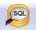

3. Creating a Spatial Database¶
3.1. PgAdmin¶
PostgreSQL has a number of administrative front-ends. The primary one is psql a command-line tool for entering SQL queries. Another popular PostgreSQL front-end is the free and open source graphical tool pgAdmin. All queries done in pgAdmin can also be done on the command line with psql.
Find pgAdmin and start it up.

If this is the first time you have run pgAdmin, you should have a server entry for PostGIS (localhost:5432) already configured in pgAdmin. Double click the entry, and enter anything you like at the password prompt to connect to the database.
The PostGIS database has been installed with unrestricted access for local users (users connecting from the same machine as the database is running). That means that it will accept any password you provide. If you need to connect from a remote computer, the password for the
postgresuser has been set topostgres.
3.2. Creating a Database¶
Open the Databases tree item and have a look at the available databases. The
postgresdatabase is the user database for the default postgres user and is not too interesting to us.Right-click on the
Databasesitem and selectNew Database.
Fill in the
New Databaseform as shown below and click OK.Name nycOwner postgresSelect the new
nycdatabase and open it up to display the tree of objects. You’ll see thepublicschema.Click on the SQL query button indicated below (or go to Tools > Query Tool).
Enter the following query into the query text field to load the PostGIS spatial extension:
CREATE EXTENSION postgis;
Click the Play button in the toolbar (or press F5) to “Execute the query.”
Now confirm that PostGIS is installed by running a PostGIS function:
SELECT postgis_full_version();
You have successfully created a PostGIS spatial database!!
3.3. Function List¶
PostGIS_Full_Version: Reports full PostGIS version and build configuration info.